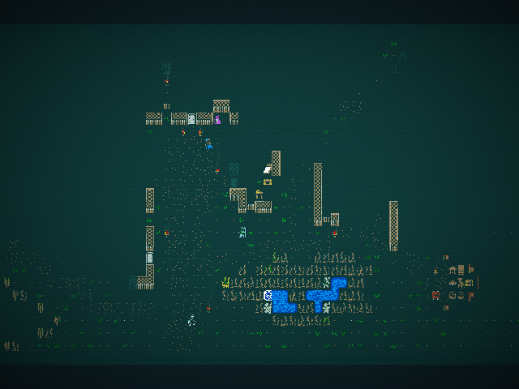

RimQud / actual engine captures / 19 October 2026
Joppa, with donor materials.
One native Qud map, two presentations. Drag the divider or use the controls below. These images came from Qud's Unity runtime; this page only compares the saved captures.

Original Qud spritesDonor materials + Qud fallback
Actual Qud map camera · generated Joppa · native field of view · after save/load · separate HUD canvases omitted
Gameplay integration passed native movement, coordinate-bearing look input, modern inventory open/close, save/load and three turns through the normal game loop. The donor layer clears for targeting and menus. Physical mouse/keyboard, long-session stability and FPS remain unverified.
Ground, paths, grass, crops, reeds, trees, doors, water and the main brinestalk walls use donor materials. The full-village simulation contains 274 grass clumps at Qud's native paint locations and 51 connected shallow-water cells. NPCs, furniture and unmapped structures keep Qud's sprites; native foregrounds over mapped water expose the liquid underneath.
Path interiors and their eight-neighbor transitions share the same donor material, texture sampling and terrain precedence. Shallow/deep appearance follows Qud's actual volume thresholds; all baseline ponds are wading depth. The liquid adapter uses donor ramp textures, not RimWorld's complete animated water pipeline.
The separate full-village simulation loads Joppa.rpm over an explicit dirt-floor fill: 80 × 25 cells, 996 authored placements, 1,810 mapped cells and 190 native fallback cells. The gameplay captures above use a real generated world and map native painted ground directly; Qud's camera effects are preserved.